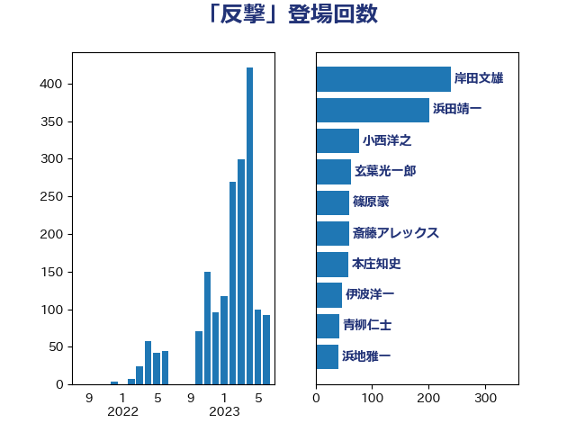

単語「反撃」

| 小西洋之 | 立憲民主党 | 20 回 |
| 岸信夫 | 自由民主党 | 16 回 |
| 伊波洋一 | 無所属 | 14 回 |
| 田島麻衣子 | 立憲民主党 | 12 回 |
| 岡田克也 | 立憲民主党 | 11 回 |
| 井上哲士 | 日本共産党 | 10 回 |
| 岸田文雄 | 自由民主党 | 10 回 |
| 篠原豪 | 立憲民主党 | 8 回 |
| 掘井健智 | 日本維新の会 | 7 回 |
| 猪口邦子 | 自由民主党 | 7 回 |
| 福山哲郎 | 立憲民主党 | 7 回 |
| 穀田恵二 | 日本共産党 | 7 回 |
| 青柳仁士 | 日本維新の会 | 7 回 |
| 佐藤正久 | 自由民主党 | 5 回 |
| 小野寺五典 | 自由民主党 | 5 回 |
| 羽田次郎 | 立憲民主党 | 5 回 |
| 茂木敏充 | 自由民主党 | 5 回 |
| 松原仁 | 立憲民主党 | 4 回 |
| 玉木雄一郎 | 国民民主党 | 4 回 |
| 上田清司 | 国民民主党 | 3 回 |
| 太栄志 | 立憲民主党 | 3 回 |
| 奥野総一郎 | 立憲民主党 | 3 回 |
| 宮本徹 | 日本共産党 | 3 回 |
| 宮澤博行 | 自由民主党 | 3 回 |
| 小池晃 | 日本共産党 | 3 回 |
| 浅田均 | 日本維新の会 | 3 回 |
| 美延映夫 | 日本維新の会 | 3 回 |
| 北村経夫 | 自由民主党 | 2 回 |
| 古賀友一郎 | 自由民主党 | 2 回 |
| 山添拓 | 日本共産党 | 2 回 |
| 松川るい | 自由民主党 | 2 回 |
| 緒方林太郎 | 無所属 | 2 回 |
| 赤嶺政賢 | 日本共産党 | 2 回 |
| 馬場伸幸 | 日本維新の会 | 2 回 |
| 三浦信祐 | 公明党 | 1 回 |
| 伊藤俊輔 | 立憲民主党 | 1 回 |
| 北神圭朗 | 無所属 | 1 回 |
| 堀井巌 | 自由民主党 | 1 回 |
| 守島正 | 日本維新の会 | 1 回 |
| 小山展弘 | 立憲民主党 | 1 回 |
| 岩屋毅 | 自由民主党 | 1 回 |
| 打越さく良 | 立憲民主党 | 1 回 |
| 末松義規 | 立憲民主党 | 1 回 |
| 杉本和巳 | 日本維新の会 | 1 回 |
| 林芳正 | 自由民主党 | 1 回 |
| 柳ヶ瀬裕文 | 日本維新の会 | 1 回 |
| 柴田巧 | 日本維新の会 | 1 回 |
| 水岡俊一 | 立憲民主党 | 1 回 |
| 泉健太 | 立憲民主党 | 1 回 |
| 片山さつき | 自由民主党 | 1 回 |
| 稲田朋美 | 自由民主党 | 1 回 |
| 笠井亮 | 日本共産党 | 1 回 |
| 萩生田光一 | 自由民主党 | 1 回 |
| 重徳和彦 | 立憲民主党 | 1 回 |
| 金村龍那 | 日本維新の会 | 1 回 |
| 鈴木庸介 | 立憲民主党 | 1 回 |
| 長妻昭 | 立憲民主党 | 1 回 |
| 阿部司 | 日本維新の会 | 1 回 |